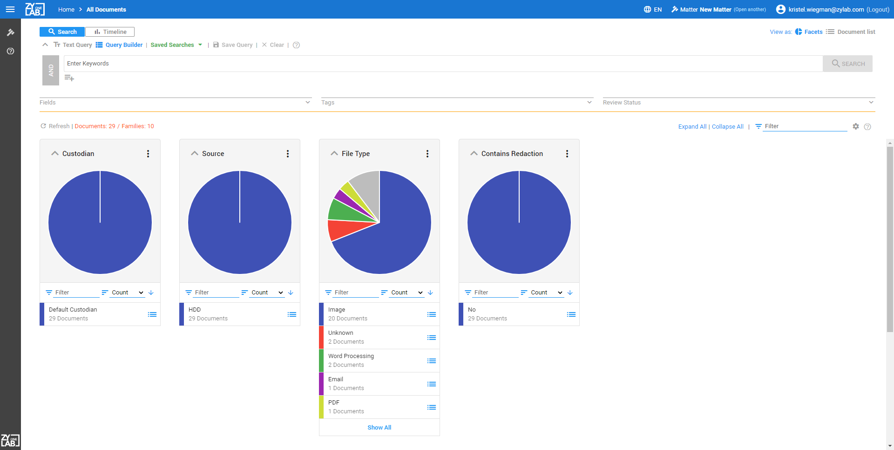

Explore documents for global searches. If you do not know yet what you are looking for exactly, you can, for example, explore by custodian and obtain an overview of all documents of that custodian.
-
Select a subgroup from one of the available groups or facets (Assigned To, Reviewed (Yes or No), Custodian, etc.), by clicking on one of the boxes or a part of the facet (pie chart).

-
If not all subgroups can be viewed on the main page, select Show All.
-
Filter (select the Filter box and type what you are looking for) or sort on Count (number of documents) or Name. Both Count and Name can be sorted ascending and descending.
-
Download Values and Counts from Facets with Export to CSV (via three dots in top right corner of a facet).

After you have selected a subgroup, you can select another subgroup. Alternatively, you can decide to not narrow down your search, skip this step and go directly to Document List by clicking the Switch to Document List button.